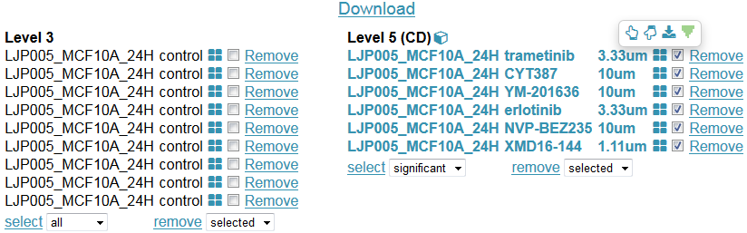

Slicer is a metadata search engine that searches for LINCS L1000 gene expression profiles and signatures matching user's input parameters. It features download of selected search results as csv files in a zipped folder and visualization of selected results in a 3D scatter plot using PCA or MDS. Slicer consists of three views: the search view, the checkout view and the 3D scatter view.
Search View: This view will show up after user inputs some parameters in the search bar and clicks the search button. It is divided into two sections: the Level 3 section and the Level 5 section. LINCS L1000 data have multiple levels depending on how much preprocessing has been done on the data. The level 3 data are normalized gene expression profiles. The level 5 data are differential expression signatures computed from level 3 replicates. The level 5 signatures in Slicer were computed using characteristic direction (CD) method and the details of this method can be found here. The Level 3 and the Level 5 sections display matched entries at corresponding levels. The highlighted entries in Level 5 section are significant signatures with p-value < 0.1.
Checkout View: If a profile or signature is checked in the search view, a checkout button will appear at the top right corner. Clicking on the button will bring up the checkout view. There is a download button at the top of the checkout view that will download gene expression profiles and signatures selected at the search view as tsv files in a zipped folder. User can remove any selected entries to fine-tune the selection. If more than two entries in either section are checked at this view, a cube button will show up. Clicking on the button will visualize the selected entries in a 3D plot. Clicking on the four-squre button in an entry opens a popover of 4 buttons in level 5 section and of one button in level 3 section. Clicking on the up/down hands will show the up/down genes. Clicking on the download button will download the entry as a JSON object. Clicking on the green button will show consensus signatures in L1000CDS².
3D Scatter View: This view visualizes the selected entries at the checkout view in a 3D scatter plot. The distances between the entries in the 3D space | depict the relative similarities among them. For the Leve 3 gene expression profiles PCA is used to calculate the coordinates. For the Level 5 gene expression signatures MDS is used to compute the positions from the cosine distances between the CD signatures. Clicking on the perturbation, cell, and time point buttons will color the dots by corresponding parameters.